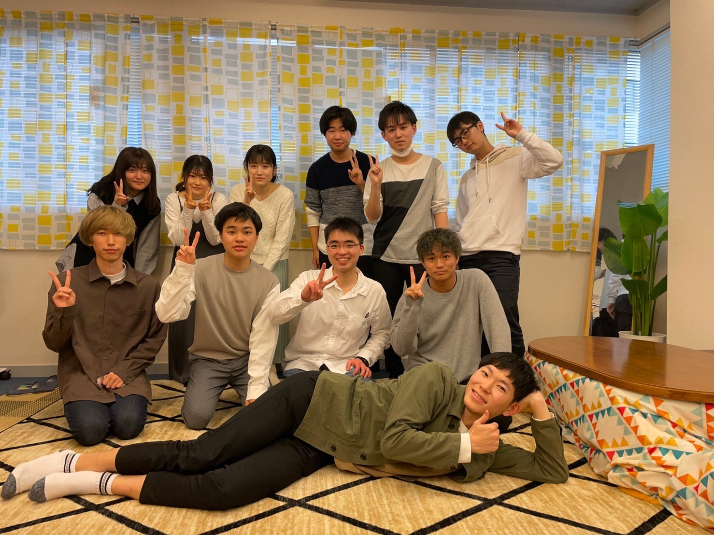

総務局紹介
総務局の役割
総務局は、データの分析で明大祭を発展させる局です。多くの人から集めた明大祭に関するデータを分析し、そこから明大祭をより良くする方法を考えます。また、活動を通してみなさん自身も沢山の明大祭の魅力を体感することができます！
総務局が会議でやること
総務局の局会議では、明大祭や明大祭実行委員会に関するデータを用いて分析を行っていきます。分析していく中で色々な局と関わっていくことになるため、各局について知ることができます！また、明大祭のみならず他大学の学園祭の研究を行うことで明大祭に他大学の活動も還元していきます！
総務局の会議日
局会議：毎週金曜日19:00〜
部門会議：毎週月曜日19:00〜
レクの様子
総務局のレクは主に1・2年が中心となって考えて、月に1回以上は行っています！インドア、アウトドアはどちらかに偏ることなく、様々なレクを行っています。また2・3年生の人数は他の局に比べると少ない方であるため、学年間の隔たりが少なく、学年の壁を超えて仲良くレクを行っています！